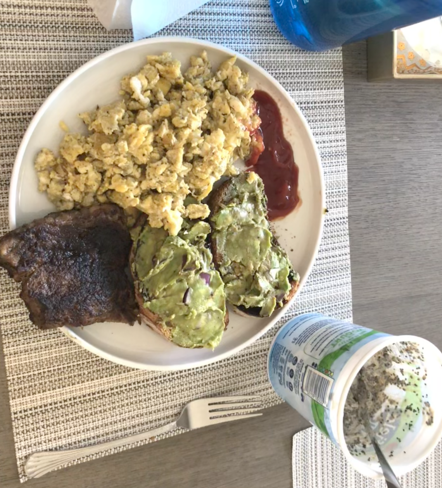

Steak n' Eggs

Elevate your masculinity with this nourishing, protein-packed meal. Accompanied by soft, flavorful scrambled eggs, this pound of mouth-watering grass-fed beef is sure keep you full for the day
Ingredientes
- One pound of ribeye steak
- 6 eggs
- 1 tablespoon of ghee butter
- Herbs of your choice
- One avocado
- One cup of blueberries
Instrucciones
- Cast iron skillset to medium-high
- Season steak how you prefer on a cuttingboard
- Add a tablespoon of ghee to the pan once hot, and lay steak away from you unto the pan
- Turn every 45 seconds, about 6 times
- Crack 6 eggs into hot pot with 1 teaspoon of butter
- Scramble with wooden spoon, alternating heat between on and off every 30 seconds to prevent burning, and add herbs and spices
- Remove steak, and let sit while the eggs finish
- Cut up avocado, and place unto plate alongside the blueberries
- Place steak and eggs on plate too, and enjoy!
Home